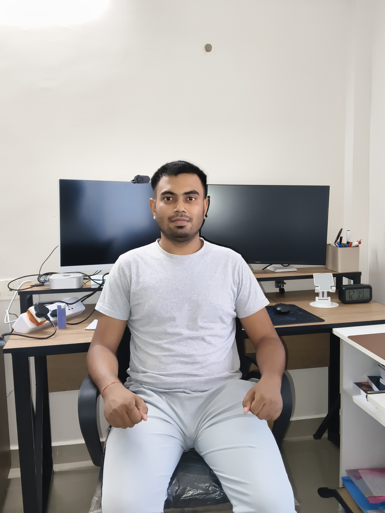

FINBERT Financial Analysis
NLP project that read financial statements and extracted key information.
View code
I’m Utkarsh, a machine learning and data science graduate from India. I build computer vision and analytics projects, and I’m looking for my first full-time role.
I enjoy the full path from raw data to a working result: collecting and cleaning it, training a model, and checking honestly whether it holds up.
NLP project that read financial statements and extracted key information.
View codePytorch Pretrained Model for Detecting Forest Fires in Satellite Images.
View codeMachine learning model to predict drought conditions based on climate data.
View codeFeature Engineered Pretrained Model
[Relevant coursework, thesis or honors.]
Python, R, SQL
Pytorch, Tensorflow, Scikit Learn, Jax
Numpy, Matplotlib, Pandas
Git, GitHub, Linux, Docker
I’m open to full-time roles and interesting projects. The quickest way to reach me is email.